TOIRO十色 爪のアトリエ
一本の指に、一枚の絵。
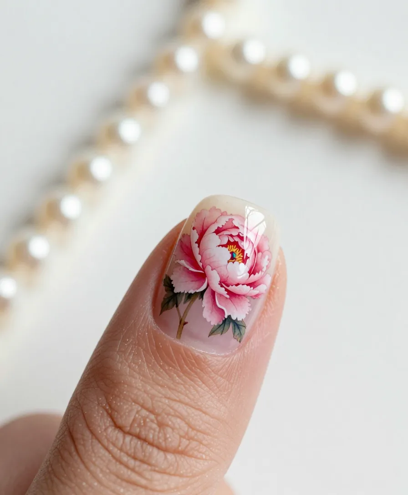
Ten fingers, ten paintings.
Prefaceはじめに
爪は、指先にある、いちばん小さなキャンバスです。
TOIROは、十本の指に、十枚の絵を描くアトリエ。ひとつのデザインを、ひとつの「章」として、順にご覧いただけます。
指の爪をたどると、その章へ。
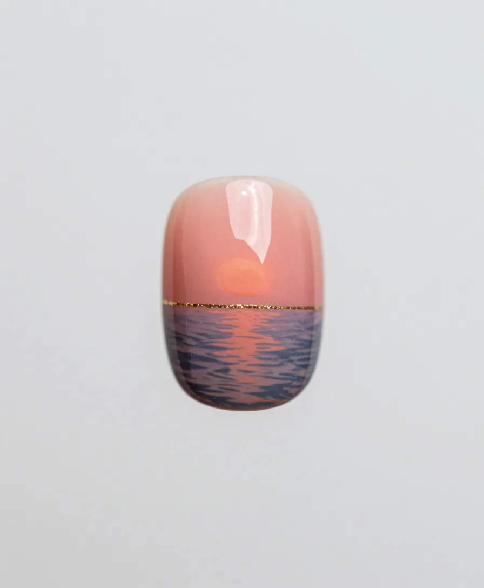
右・親指
朝凪Morning Calm
夜がほどけて、海が色を取り戻す、ほんの少し前。珊瑚色の空に、金の線を一本だけ引きました。
- 所要時間
- 90分
- 料金
- ¥8,800（仮）
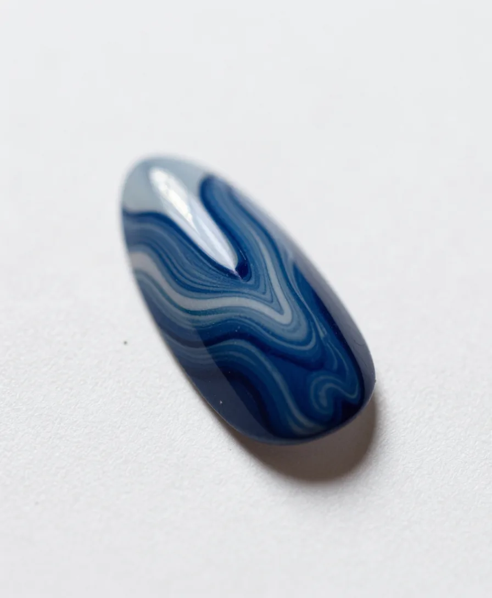
右・人差し指
流墨Marbled Ink
水に墨を落として、紙に写しとる。藍の流れが、爪の上で止まる一瞬です。
- 所要時間
- 100分
- 料金
- ¥9,900（仮）
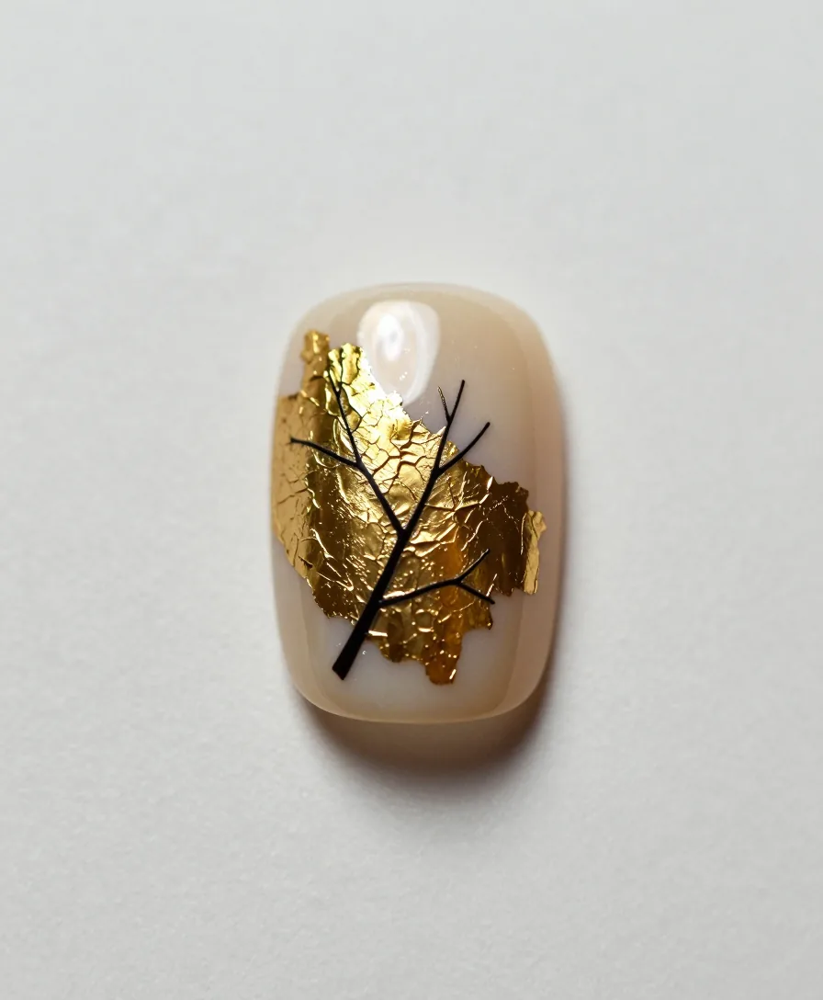
右・中指
金箔の枝Gold & Branch
金箔を割って、貼る。ひびの上に、墨で一本の枝を描きます。
- 所要時間
- 110分
- 料金
- ¥11,000（仮）
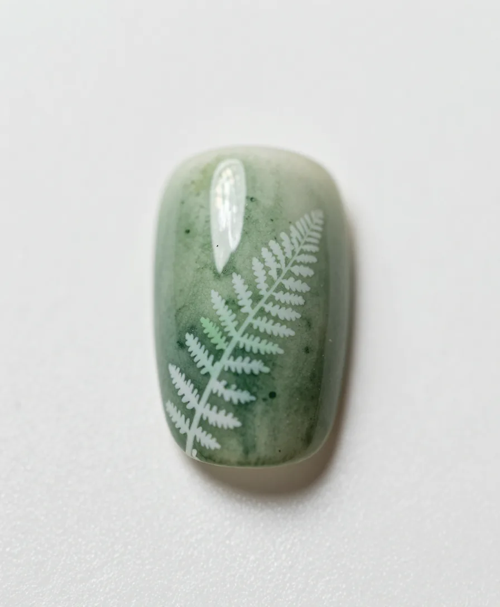
右・薬指
羊歯Fern
森の湿った緑を、水彩のにじみで。白い羊歯の葉を、細い筆で一枚ずつ。
- 所要時間
- 100分
- 料金
- ¥9,900（仮）
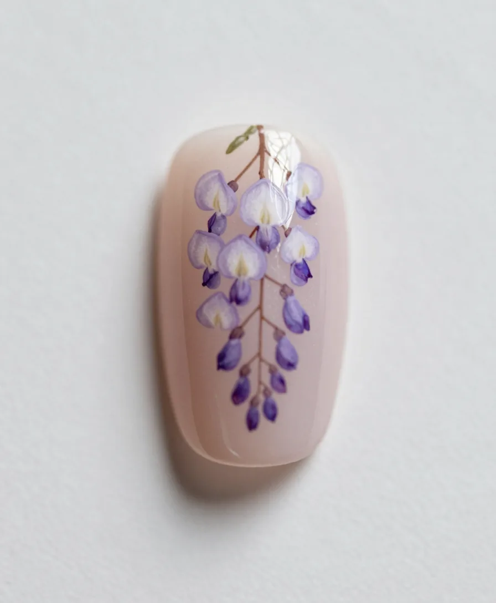
右・小指
藤Wisteria
垂れ下がる藤の花房を、淡い紫の筆致で。風が通ったあとの揺れを残します。
- 所要時間
- 100分
- 料金
- ¥9,900（仮）
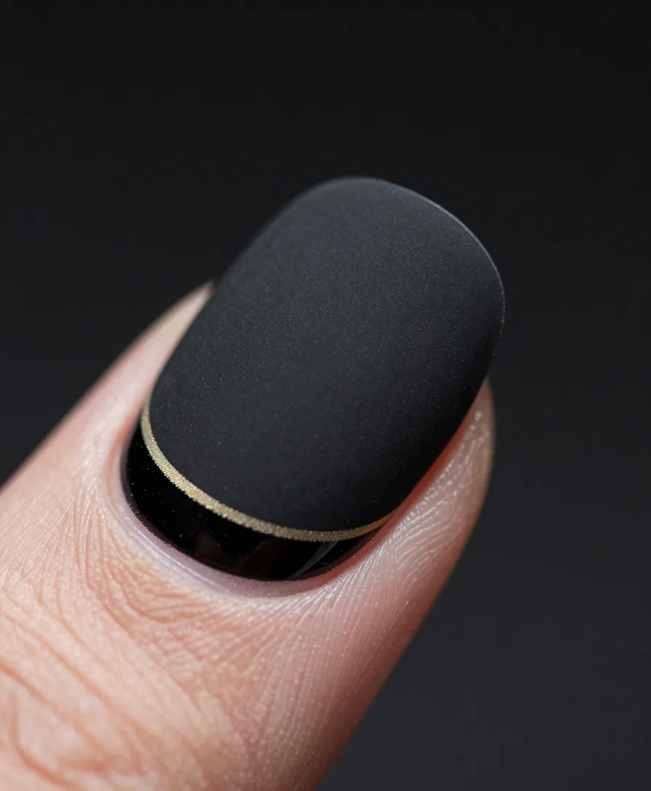
左・親指
宵Noir
黒に、黒を重ねる。マットな面と、鏡のような艶、その境に金の粉を一本だけ。
- 所要時間
- 80分
- 料金
- ¥8,800（仮）
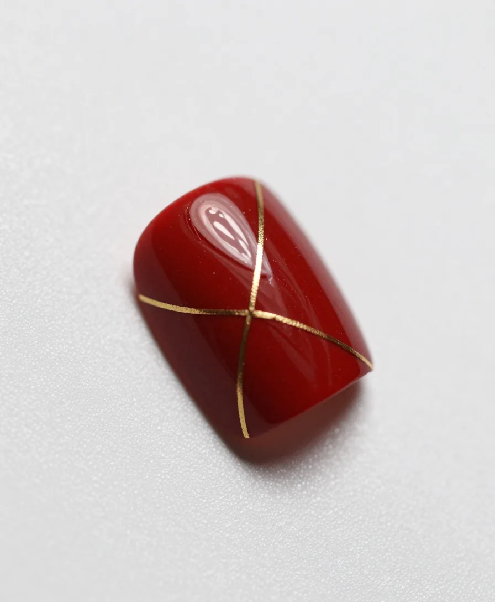
左・人差し指
金継ぎKintsugi
朱の漆のような面に、割れ目を金の細い線で継ぎます。壊れたあとの美しさです。
- 所要時間
- 110分
- 料金
- ¥11,000（仮）
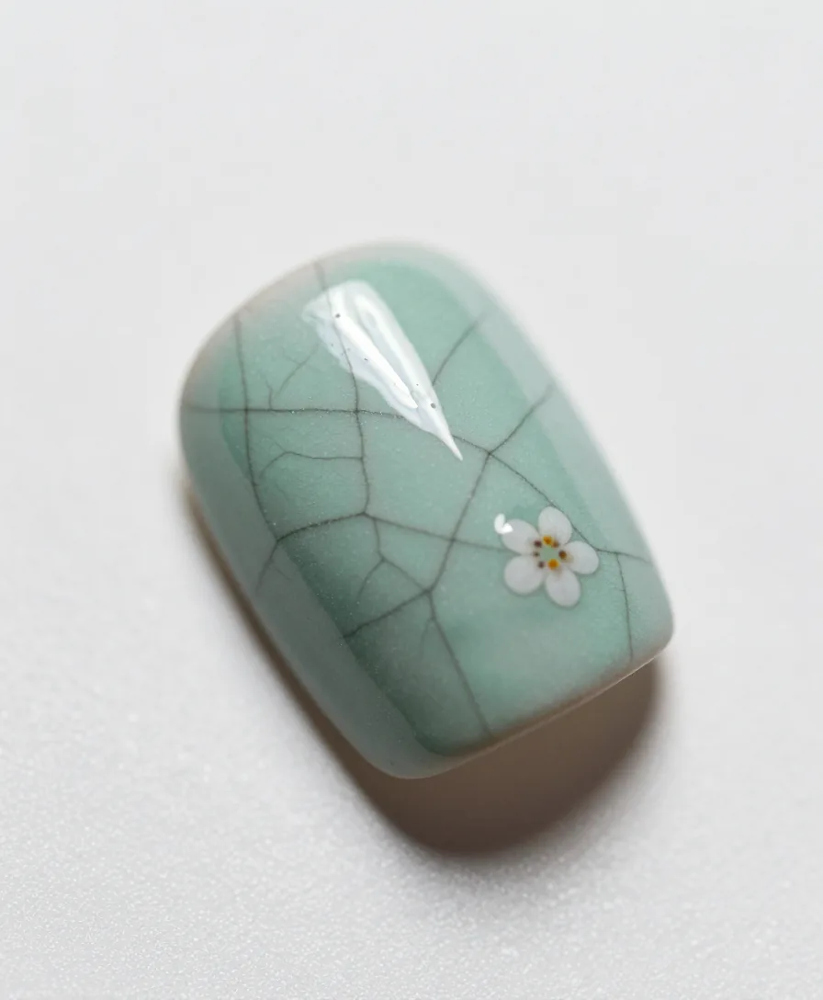
左・中指
貫入Crackle
青磁の釉薬に走る、細かなひび。そこに、小さな花を一輪だけ置きました。
- 所要時間
- 100分
- 料金
- ¥9,900（仮）
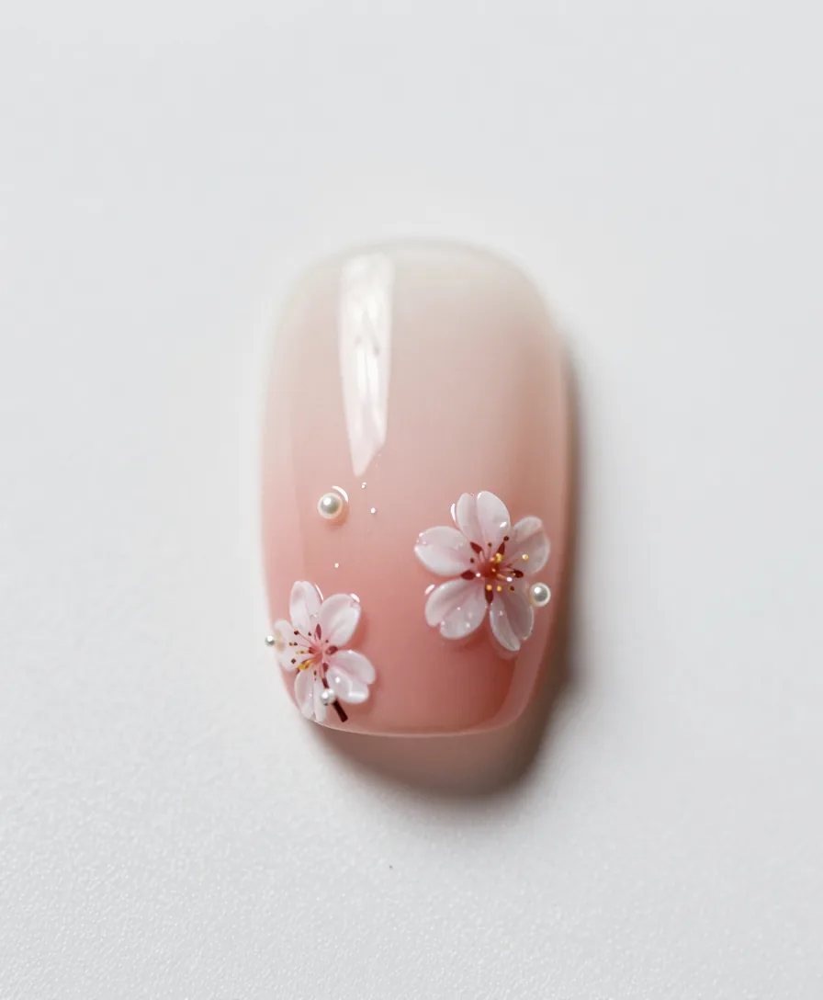
左・薬指
桜Blossom
桃色のぼかしに、花びらと小さな真珠。春がいちばん薄く光る色です。
- 所要時間
- 90分
- 料金
- ¥8,800（仮）
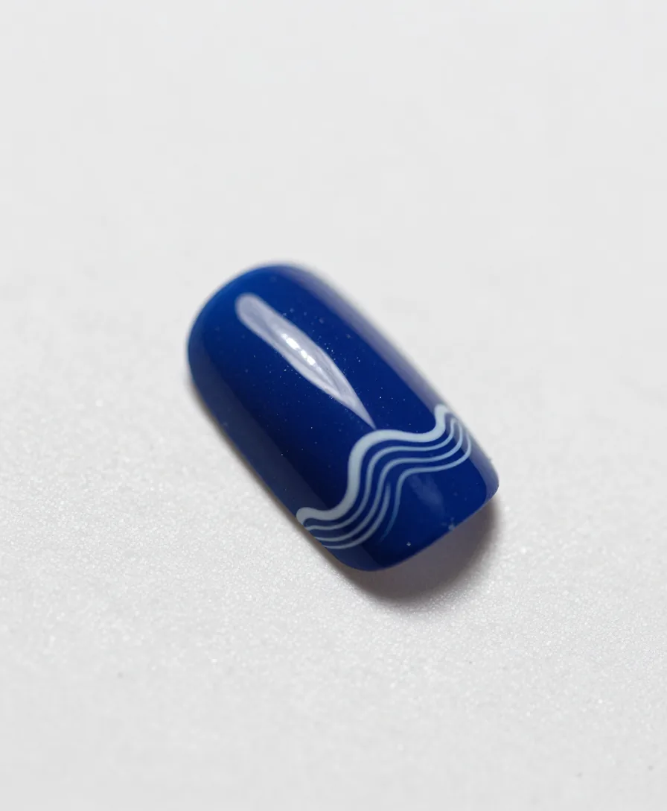
左・小指
波Wave
群青の地に、細い白の波頭。深い色の中にも、動きが残ります。
- 所要時間
- 100分
- 料金
- ¥9,900（仮）
Reserveご予約
Atelier店舗情報
- 店名
- TOIRO（十色） ※架空
- 営業
- 準備中
- 住所
- 準備中
- 電話
- 準備中